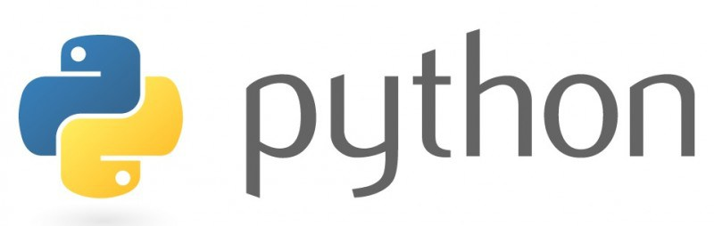
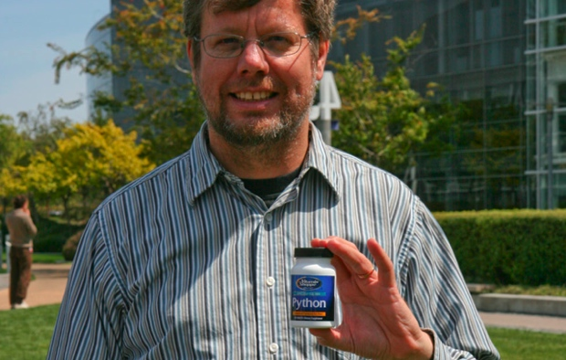
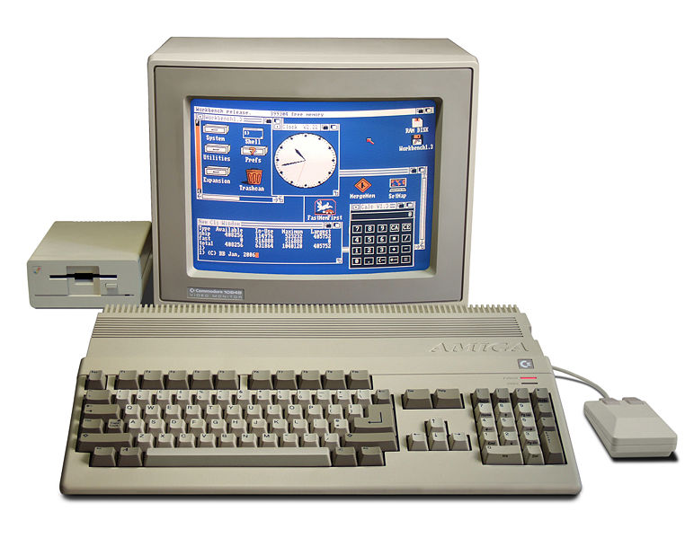
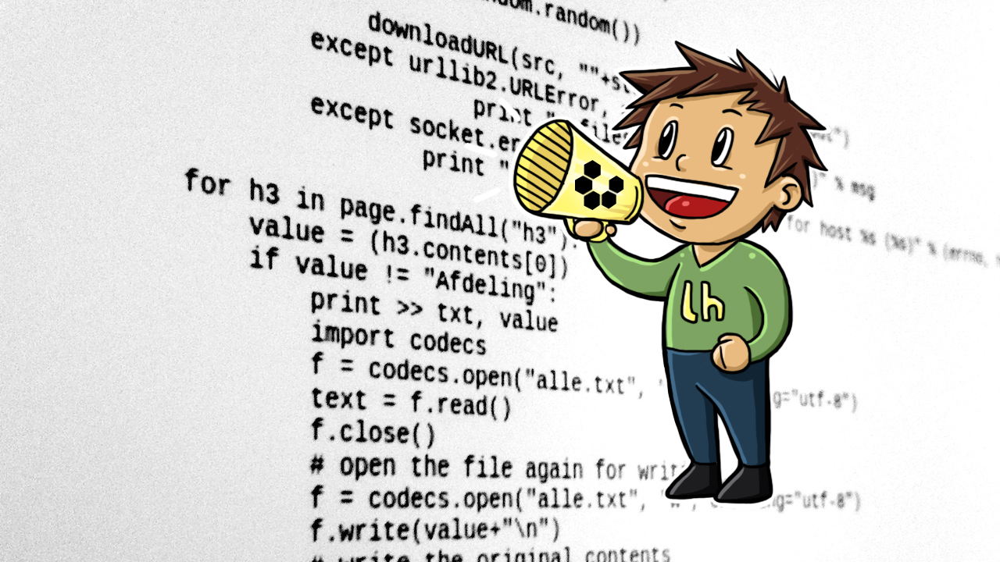

Introducción
Table of Contents
1 Presentación
- 8 años como desarrollador de software
- He sido ayudante de profesor y de laboratorio
- Trabajo como desarrollador en la CSC de la Facultad de Ciencias
- Uno de los principales productos con los que trabajo es el sistema XFC.
2 Objetivos
En esta sesión
- Obtener una visión histórica de lo que es python
- Obtener una visión general de la filosofía de diseño en python
- Conocer cual son los puntos del Zen de Python
- Conocimiento de la principal herramienta de python (shell intérprete)
- Configuración del entorno de desarrollo (emacs)
3 ¿Qué es python?
Es un lenguaje de programación interpretado cuya filosofía hace hincapié en una sintaxis que favorezca un código legible.
Se trata de un lenguaje de programación multiparadigma, ya que soporta orientación a objetos, programación imperativa y, en menor medida, programación funcional. Es un lenguaje interpretado, usa tipado dinámico y es multiplataforma.
Es administrado por la Python Software Foundation. Posee una licencia de código abierto, denominada Python Software Foundation License,1 que es compatible con la Licencia pública general de GNU a partir de la versión 2.1.1, e incompatible en ciertas versiones anteriores.
4 Historia
- Nacimiento
- Concebido a finales de los años 80 y principios de los 90 que ha calado muy hondo en los desarrolladores por conjugar potencia, sencillez y legibilidad del código.

5 Historia
- Padre
- Python nació de la mano de Guido van Rossum, un programador de origen holandés que desarrolló este lenguaje de programación a finales de los años 80 para el Centro para las Matemáticas y la Informática de los Países Bajos que buscaba un lenguaje de programación para ser utilizado bajo el sistema operativo Amoeba de Andrew S. Tanenbaum que fuese capaz de sustituir al lenguaje ABC.

6 Historia
- 90's
- Con un nombre que era un guiño al grupo de humoristas Monty Python, Van Rossum asumió el papel del BDFL de Python y siguió a la cabeza de los desarrollos de este lenguaje. En 1991, Van Rossum publicó la versión 0.9.0 del lenguaje en el que aparecían clases con herencia o excepciones, en 1994 se formó el primer foro de discusión alrededor de este lenguaje además de lanzarse, en el mes de enero, la versión 1.0 del lenguaje (que incluía herramientas para programación funcional).

7 Historia
- 90's
- En 1995, Van Rossum dejó el Centro para las Matemáticas y la Informática de los Países Bajos y se marchó a Estados Unidos a continuar el desarrollo de Python en la Corporation for National Research Initiatives hasta que en el año 2000, Van Rossum y su equipo de desarrolladores se marcharon a BeOpen.com donde lanzaron Python 2.0 (que incluía un recolector de basura) hasta marcharse, de nuevo, a Digital Creations (ambos movimientos motivados por la idea de trabajar en software comercial).

8 Historia
- 2000's
- En el año 2000 Python era bastante popular y, según la licencia de este lenguaje, estaba sujeto a la legislación del Estado de Virginia, lo cual era incompatible con la licencia GPL. En el año 2001, se creó la Python Software Foundation (PSF), siguiendo el modelo de Apache y se lanzó Python 2.1 bajo la licencia Python Software Foundation License.
- (no term)
- Más información, presentación de los 21 años de python.
9 Filosofía de python
La filosofía de python se basó
- Tomar ideas prestadas de otros lugares siempre que tuviera sentido.
- “Las cosas deben ser tan simples como sea posible, pero no más simples.” (Einstein)
- Haz una cosa bien (la “filosofía de Unix”).
- No preocuparse mucho sobre la performance; planea optimizar luego, cuando sea necesario.
- No pelear con el entorno y seguir la corriente.
- No intentar la perfección porque “suficientemente bueno” es a menudo eso.
- (Corolario) Está bien tomar atajos a veces, especialmente si se puede hacer bien luego.
10 Filosofía de python
A pesar de lo anterior.
- La implementación de Python no debe estar atada a una plataforma en particular. Está bien si algunas funcionalidades no están siempre disponibles, pero el núcleo debe correr en todo lugar.
- No molestar a los usuarios con detalles de los que la máquina se puede encargar (no siempre seguí esta regla y algunas de las desastrosas consecuencias se describen en las siguientes secciones).
- Soportar y animar a que el código de los usuarios sea independiente de la plataforma, pero no evitar el acceso a las capacidades o propiedades de la plataforma (esto contrasta bruscamente con Java).
- Un sistema complejo y grande debe poderse extender en muchos niveles. Esto maximiza las oportunidades para los usuarios, sofisticados o no, de ayudarse a sí mismos.
11 Filosofía de python
- Los errores no deben ser fatales. Esto significa que el código de los usuarios debe ser capaz de recuperarse de condiciones de error mientras que la máquina virtual siga funcionando.
- Al mismo tiempo, los errores no deben pasar inadvertidos (estos dos últimos ítems llevan naturalmente a la decisión de usar excepciones en la implementación).
- No se debe permitir que un error en el código Python del usuario lleve al intérprete de Python a un comportamiento no definido; un fallo de segmento (core dump) no es nunca culpa del usuario.
12 Zen de python
Tim Peters, capturó los principios de diseño anteriores en lo que llamó "Zen de Python"
- Bello es mejor que feo.
- Explícito es mejor que implícito.
- Simple es mejor que complejo.
- Complejo es mejor que complicado.
- Plano es mejor que anidado.
- Disperso es mejor que denso.
- La legibilidad cuenta.
- Los casos especiales no son tan especiales como para quebrantar las reglas.
- Lo práctico gana a lo puro.
13 Zen de python
- Los errores nunca deberían dejarse pasar silenciosamente.
- A menos que hayan sido silenciados explícitamente.
- Frente a la ambigüedad, rechaza la tentación de adivinar.
- Debería haber una -y preferiblemente sólo una- manera obvia de hacerlo.
- Aunque esa manera puede no ser obvia al principio a menos que usted sea holandés.
- Ahora es mejor que nunca.
- Aunque nunca es a menudo mejor que ya mismo.
- Si la implementación es difícil de explicar, es una mala idea.
- Si la implementación es fácil de explicar, puede que sea una buena idea.
- Los espacios de nombres (namespaces) son una gran idea ¡Hagamos más de esas cosas!
14 Intérprete de Python
En una terminal basta con ejecutar la siguiente instrucción
python
El comando anterior nos permite invocar a python 2, mientras que el siguiente comando invoca a python 3
python3